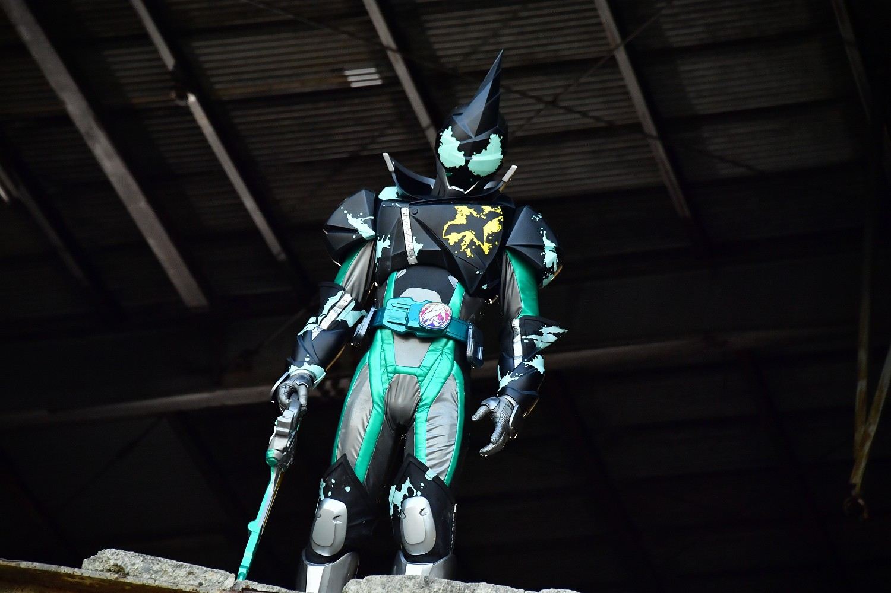
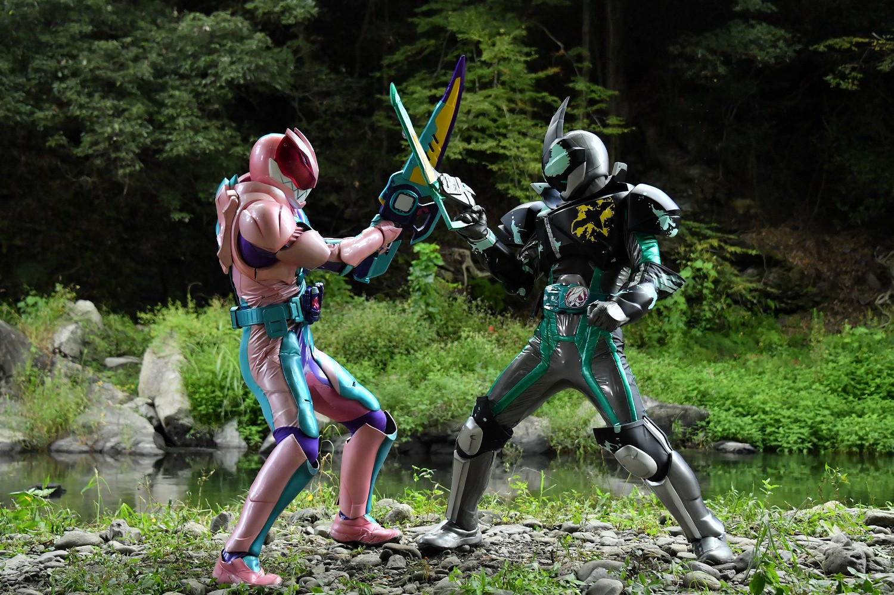
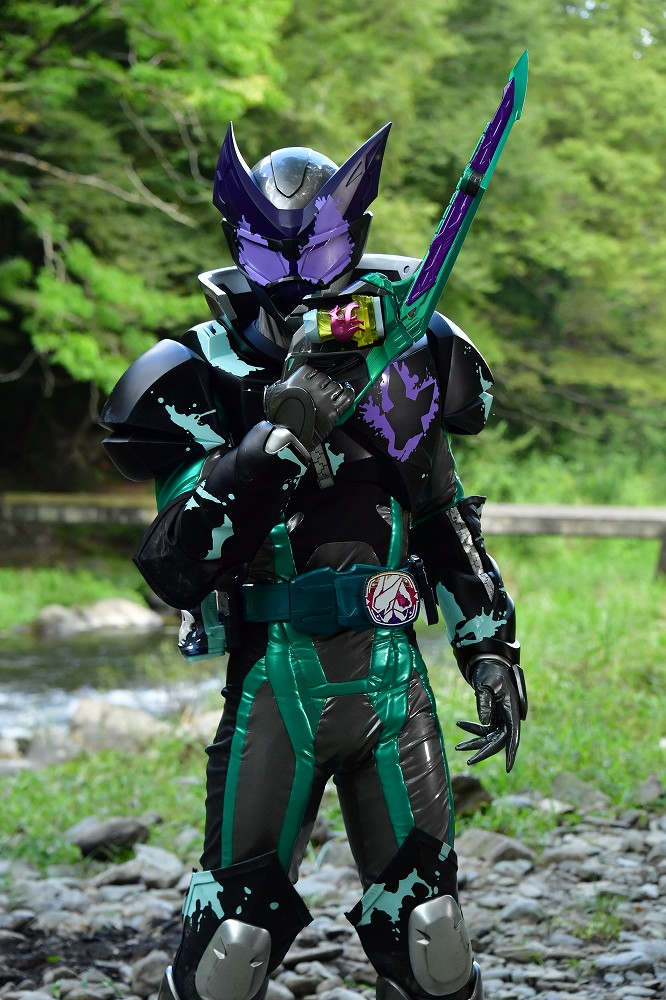
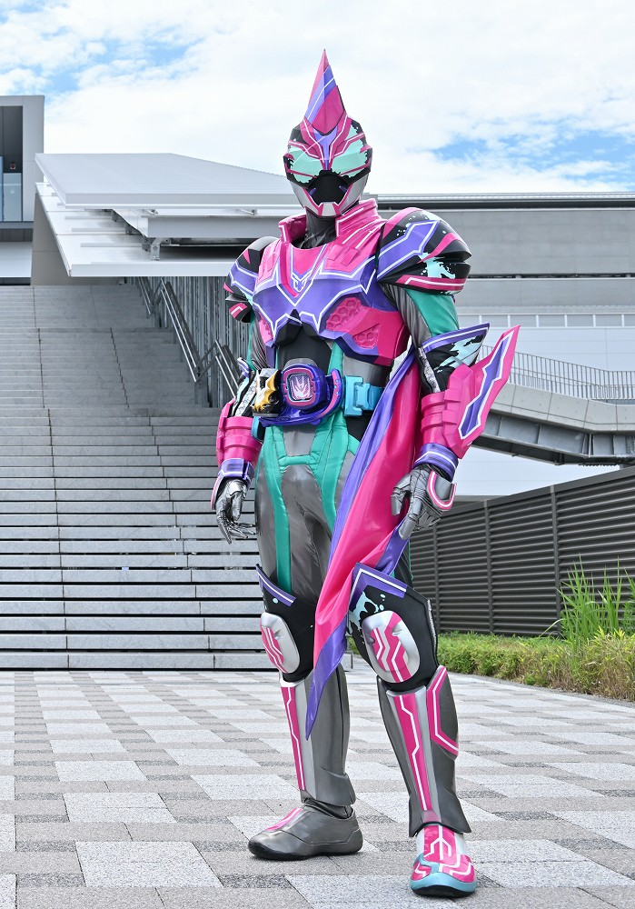

2021年から放送された「仮面ライダーリバイス」に登場する仮面ライダー
変身者は五十嵐大二から生まれた悪魔カゲロウ。ツーサイドライバーとバイスタンプを使い変身する。
２つの変身形態があり、これはマイナスエネルギーを増大した悪魔を主体とした形態。
基本形態はバットゲノム
身長：207.0cm 体重：106.8kg パンチ力：15.8t キック力:37.5t ジャンプ力：ひと跳び45.1m 走力：100mを3.1秒程度

ツーサイドライバーにバイスタンプを押印し、セット。その後ツーサイドライバーの先端を上に展開し、
トリガーを引くことで変身する。
ツーサイドライバーの先端を上側にすることで仮面ライダーライブに変身することも可能。
人間の中に潜んでいる存在。バイスタンプを体に押印したり、
手術で分離することで実体化する。
悪魔は基本自由に行動し、性格は元の宿主の抑圧された性格になる場合が多い。

バットゲノム
「バット」バイスタンプで変身
隠密行動を得意とし、飛行能力と高い静穏性を駆使し、奇襲する。
ライブと異なり、接近戦を主体とした攻撃を行う。

ジャッカルゲノム
「ジャッカル」バイスタンプで変身
ジャッカルの遺伝子により、俊敏な戦闘が可能。
アクロバティックな動きで敵を翻弄し、武器による高速の連続斬撃を放つ。

エビルマーベラス
「メガバット」バイスタンプとリバイスドライバーで変身
ライブマーベラスとの連携攻撃で敵を圧倒する。
変身シーンがシュール
仮面ライダー一覧